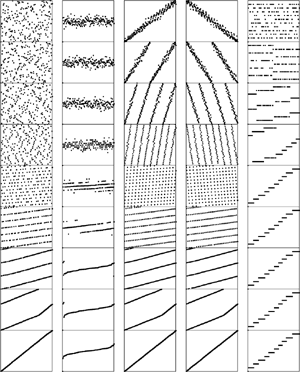

C++ Programming Robert Sedgewick - Princeton University Addison Wesley Professional Algorithms in C++, Parts 1–4: Fundamentals, Data Structure, Sorting, Searching, Third Edition
10.6. Performance Characteristics of Radix Sorts
The running time of LSD radix sort for sorting N records with w-byte keys is proportional to Nw, because the algorithm makes w passes over all N keys. This analysis does not depend on the input, as illustrated in Figure 10.17.
These diagrams illustrate the stages of LSD radix sort for files of size 200 that are random, Gaussian, nearly ordered, nearly reverse ordered, and randomly ordered with 10 distinct key values (left to right). The running time is insensitive to the initial order of the input. The three files that contain the same set of keys (the first, third, and fourth all are a permutation of the integers from 1 to 200) have similar characteristics near the end of the sort.

For long keys and short bytes, this running time is comparable to N lg N: For example, if we are using a binary LSD radix sort to sort 1 billion 32-bit keys, then w and lg N are both about 32. For shorter keys and longer bytes this running time is comparable to N: For example, if a 16-bit radix is used on 64-bit keys, then w will be 4, a small constant.
To compare properly the performance of radix sort with the performance of comparison-based algorithms, we need to account carefully for the bytes in the keys, rather than for only the number of keys.
Property 10.1. The worst case for radix sorting is to examine all the bytes in all the keys|
In other words, the radix sorts are linear in the sense that the time taken is at most proportional to the number of digits in the input. This observation follows directly from examination of the programs: No digit is examined more than once. This worst case is achieved, for all the programs we have examined, when all the keys are equal.
|
As we have seen, for random keys and for many other situations, the running time of MSD radix sorting can be sublinear in the total number of data bits, because the whole key does not necessarily have to be examined. The following classical result holds for arbitrarily long keys:
Property 10.2. Binary quicksort examines about N lgN bits, on average, when sorting keys composed of random bits|
If the file size is a power of 2 and the bits are random, then we expect one-half of the leading bits to be 0 and one-half to be 1, so the recurrence CN = 2CN/2 + N should describe the performance, as we argued for quicksort in Chapter 7. Again, this description of the situation is not entirely accurate, because the partition falls in the center only on the average (and because the number of bits in the keys is finite). However, the partition is much more likely to be near the center for binary quicksort than for standard quicksort, so the leading term of the running time is the same as it would be were the partitions perfect. The detailed analysis that proves this result is a classical example in the analysis of algorithms, first done by Knuth before 1973 (see reference section).
|
This result generalizes to apply to MSD radix sort. However, since our interest is generally in the total running time, rather than in only the key characters examined, we have to exercise caution, because part of the running time of MSD radix sort is proportional to the size of the radix R and has nothing to do with the keys.
Property 10.3. MSD radix sort with radix Ron a file of size N requires at least 2N + 2R steps|
MSD radix sort involves at least one key-indexed counting pass, and key-indexed counting consists of at least two passes through the records (one for counting and one for distributing), accounting for at least 2N steps, and two passes through the counters (one to initialize them to 0 at the beginning and one to determine where the subfiles are at the end), accounting for at least 2R steps.
|
This property almost seems too obvious to state, but it is essential to our understanding of MSD radix sort. In particular, it tells us that we cannot conclude that the running time will be low from the fact that N is small, because R could be much larger than N. In short, some other method should be used for small files. This observation is a solution to the empty-bins problem that we discussed at the end of Section 10.3. For example, if R is 256 and N is 2, MSD radix sort will be up to 128 times slower than the simpler method of just comparing elements. The recursive structure of MSD radix sort ensures that the recursive program will call itself for large numbers of small files. Therefore, ignoring the empty-bins problem could make the whole radix sort up to 128 times slower than it could be for this example. For intermediate situations (for example, suppose that R is 256 and N is 64), the cost is not so catastrophic, but is still significant. Using insertion sort is not wise, because its expected cost of N2/4 comparisons is too high; ignoring the empty bins is not wise, because there are significant numbers of them. The simplest way to cope with this problem is to use a radix that is less than the file size.
Property 10.4. If the radix is always less than the file size, the number of steps taken by MSD radix sort is within a small constant factor of N logR N on the average (for keys comprising random bytes), and within a small constant factor of the number of bytes in the keys in the worst case|
The worst-case result follows directly from the preceding discussion, and the analysis cited for Property 10.2 generalizes to give the average-case result. For large R, the factor logRN is small, so the total time is proportional to N for practical purposes. For example, if R = 216, then logR N is less than 3 for all N < 248, which value certainly encompasses all practical file sizes.
|
As we do from Property 10.2 we have from Property 10.4 the important practical implication that MSD radix sorting is actually a sublinear function of the total number of bits for random keys that are not short. For example, sorting 1 million 64-bit random keys will require examining only the leading 20 to 30 bits of the keys, or less than one-half of the data.
Property 10.5. Three-way radix quicksort uses 2N lnN byte comparisons, on the average, to sort N (arbitrarily long) keys|
There are two instructive ways to understand this result. First, considering the method to be equivalent to quicksort partitioning on the leading byte, then (recursively) using the same method on the subfiles, we should not be surprised that the total number of operations is about the same as for normal quicksort—but they are single-byte comparisons, not full-key comparisons. Second, considering the method from the point of view depicted in Figure 10.13, we expect that the N logR N running time from Property 10.3 should be multiplied by a factor of 2ln R because it takes quicksort 2RlnR steps to sort R bytes, as opposed to the R steps for the same bytes in the trie. We omit the full proof (see reference section).
|
Property 10.6. LSD radix sort can sort N records with w-bit keys in w/lgR passes, using extra space for R counters (and a buffer for rearranging the file)|
Proof of this fact is straightforward from the implementation. In particular, if we take R = 2w/4, we get a four-pass linear sort.
|
Exercises | 10.39 Suppose that an input file consists of 1000 copies of each of the numbers 1 through 1000, each in a 32-bit word. Describe how you would take advantage of this knowledge to get a fast radix sort. | | 10.40 Suppose that an input file consists of 1000 copies of each of a thousand different 32-bit numbers. Describe how you would take advantage of this knowledge to get a fast radix sort. | | 10.41 What is the total number of bytes examined by three-way radix quicksort when sorting fixed-length bytestrings, in the worst case? | | 10.42 Empirically compare the number of bytes examined by three-way radix quicksort for long strings with N = 103, 104, 105, and 106 with the number of comparisons used by standard quicksort for the same files. | |  10.43 Give the number of bytes examined by MSD radix sort and three-way radix quicksort for a file of N keys A, AA, AAA, AAAA, AAAAA, AAAAAA,.... 10.43 Give the number of bytes examined by MSD radix sort and three-way radix quicksort for a file of N keys A, AA, AAA, AAAA, AAAAA, AAAAAA,....
|
|